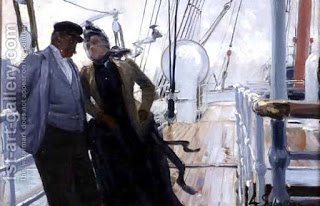

Eruvin 90 - Symmetrical arguments
The Talmud lists a number of disagreements between Rav and Shmuel, where each of them reverses his position depending upon the circumstances. All of them are about walls and roofs.
Take, for example, a ship. Rav says that on Shabbat one can carry throughout the entire ship, and Shmuel says that he is allowed to carry objects for only four steps. What is each one’s logic? Rav considers the ship a private area, because it is surrounded by the ship’s walls, which make it into a closed partition. However, Shmuel claims that these walls are not made to surround the ship on the sides, but rather to keep the water outside, so they don’t count.
However, even Rav agrees that one turns the ship upside down, one cannot carry in the area under the ship. Why not? If one intends to live there, it is no worse than a house! - Rather, we are talking about a situation where one overturned the ship in order to tar it. Here the walls are definitely not made to surround the area under the ship - rather, they expose their external side for being tarred. Therefore, they are not considered partitions around the ship, and one cannot carry under it.
Art: On Ship Deck by Louis Anet Sabatier